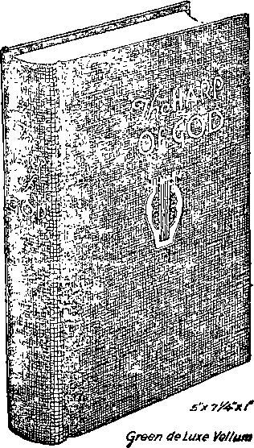

WTB&TS
s
V/J !
\'A'
“I will stand upon iny watch and will set upon the Tower, and will watch to see what say unto me, and what answer I shall make that oppose me”—Habakkuk 2:1.
No. 22
*1
T
!J
hearts falling them for fear and for looking to the
Upon the tai th distress of nations with perplexity, the sea and the waves (the restless, discontented) roaring; mens “•c?s coming upon the earth (society); for the powers of,, the heavens (ecdeslasticisin) shall be shaken. . .
Vol—XLII
Gsss8®tlb,aEdaJiItgl!jt ai»©F-Isaiity
Sbmi-Monthly
Anno Mundi 6050—November 15, 1921
CONTENTS
JEHOVAH THE C0MF0BTEB.......
Suffer Affliction .......... .......
Comforting Promises .................
Churchanlty’s Mistake........
THE WORK IN GREAT BRITAIN QUESTIONS WITH ANSWERS
What to do in an Emergency ...
Comments on Comments .....
PAUL WRITES TO A FRIEND ..
From Slave te Freedman............
PAUL’S LAST WORDS ..........
A Cry for Fellowship .
PAUL’S LABORS AND EPISTLES Ono of the Twelve? . ..
Revealer of God's Secret. ... .
THE HARP OF GOD........
... 830 .....840 .. 340
. 341 343 343
. 344 .343 .. 345
..346
.. ..847 . 348
349 . 350
351 . 351
my foot He will to them
vw- WIU1 iur me powers or,, me ueavens lecaiesiasucisiuj suuu ue snaaeo. . . . When ye see these things begin to come to pass,
Umo know that ths Kingdom of God is at bud. Look up, (Hfe* up your beads, rejoice, f< your redemption draweth nigh.—Matt. 24:33; Mark 13:29; Luks 21:25-811
THIS JOURNAL AND ITS SACRED MISSION
FpHIS Journal la one Of the prime factors or instruments in the system' o£ Bible instruction,. or “Seminary Extension’^ now be!fi< X presented In all parts of the civilized' world1 Dy the Watch Tower Bible & Tract Society, chartered A.D. 1884, “For the Promotion of Christian Knowledge”. It not only serves as a class room where Bible* students may meet in the study of the divine Word but also as a channel of communication1 through which they may be reached with announcements of the Society's conventions and. of the coming of its traveling representatives,, styled “Pilgrims”, and refreshed with reports of its. conventions.
Our “Eeream Lessons” are topical rehearsals or reviews of our Society's published Studies mo^t entertainingly arranged, and very helpful to all who would meut the only honorary degree which the Society accords, viz., Verb* Def Minister (V. D. AI), which translated into English is Minister of God’s Word. Our treatment of the International Sunday School Lessons is specially for the older Bible students and teachers. By some this feature is considered indispensable.
This journal stands, firmly for the defense of the only true foundation of the Christian’s hope now being so generally repudiated —redemption through the precious blood of “the man Christ Jesus, who ga'e himself a ransom [a corresponding pnee, a substitute] for all”. (1 Peter 1:19'; 1 Timothy 2:0) Building up on this sure foundation the gold, silver and piecious stones (1 Corinthians 3: 1115; 2 Peter 1:5-11) of the Word of God, its further mission is to “make all see what is tb-e fellowship of the m,stery which. . .has been hid in God, .... to the intent that now might be made known by the church the manifold wisdom of God”—“which in other ages was not made known unto the sons of men as it is now revealed”.—Ephesians 3:5-9,10.
It stands free from all parties, sects and creeds of men. while it seeks more and mote to bring its every utteiance into fullest subjection to the will of God in Christ,, as expressed in the holy Scriptures. It is thus free to declaie boldly whatsoever the Lord hath spoken—according to the divine wisdom granted unto us to understand his utterances. Its attitude is not dogmatic,’ but confident; for we know whereof we: affirm, treading with implicit faith upon the sure promises of God. It is held as a tiust, to be used only m his service; hence onr decisions relative to what may and what may not appear in its- columns must be accoiding to our judgment of his good pleasure, the teaching of Ins Word, for the upbuilding of his people- in grace* and knowledge. And we not only invite but urge our readers to prove all its utterances by the infallible Word to which reference is constantly made to facilitate such testing.
TO US THE SCRIPTURES CLEARLY TEACH
That the church is “the temple of the living God”, peculiarly “his workmanship” ; that its construction has been in progress throughout the gospel age—ever since Christ became the world’s Redeemer and the Chief Corner Stone of his temple, thtouch which, when finished, God's blessing shall come “to all people”, and they find access to him.—1 Corinthians 3:16, 17; Ephesians 2:20-22; Genesis 28:14; Galatians 3 : 29.
That meantime the chiseling, shaping, and polishing of consecrated believers in Christ’s atonement for sin, progresses; and when the last of these “living stones”, “elect and precious,” shall have been made ready, tho great Master Workman will bring all together in the first lesurrcction ; and the temple shall be filled with his glory, and be the meeting place between God and men throughout the Millennium.—Re\elaticn 15.5-8.
That the basis of hope, for the church and the world, lies in the fact that “Jesus Christ, by the grace of God, tasted death for every man,” “a ransom for all,” and will be “the true light which hghteth every man that cometh into the world”, “in due time”.— Hebrews 2:9; John 1 : 9; 1 Timothy 2:5, G.
That the hope of the church is that she may be like her Lord, “see him as he is,” be “partakers of the divine nature’/ and share his glory as bis joint-heir.—1 John 3.2; John 17:24; Romans 8:17; 2 ePeter 1:4.
That the present mission of the church is the perfecting of the saints for the future work of service; to develop in herself every grace; to be God’s witness to the world; and to prepare to be kings and priests in the next age.—Ephesians 4:12; Matthew 24s 14 ; Revelation 1:6; 20 : G.
That the hope for the world lies in the blessings of knowledge and opportunity to be brought to all by Christ’s Millennial kingdom, ths restitution of all that was lost in Adam, to all the willing and obedient, at the bands of their Redeemer and his glorified church* when all the wilfully wicked will be destroyed.—Acts 3:19-23; Isaiah 35.
Published oy
124 COLUMBIA HEIGHTS □ o BROOKLYN, N;Y U-S A
Foreign Offices: Butish: 34 Craven Terrace, Lancaster Gate, London W. 2; Canadian 270 Dundas St, W., Toronto, Ontario; Australasian- 495 Collins St., Melbourne, Australia; South Afrir tan: 123 Plein St., Cape Town, South Africa.
Please Address the Society in Every Case;_______
YEARLY SUBSCRIPTION PRICE. United State*. $1 00 : Canada and Miscellaneous Foreign, $150, Great Dritun. Australasia, and South Africa, 8^. American remittances should be made by Express or Postal Money Ordeis, or by Bank Draft. Canadian, British, South African, and Australasian remittances should be made to branch offices only. Remittances from scattered foreign territory may be made to the Brooklyn office, but by International Postal Money Orders only.
(Foreign translations of this journal appear in several languages)
Editorial Committee: This journal is published under the supervision of an editorial committee. at least three of whom have read and approved as truth each and every article appearing in these columns. The names of the editorial committee are* J. F Rutherford, W. E Van Amburgh, F IT. Robison, G. H. Fi^hcr, E. W. Brenisen. Terms to the Ford*8 Poor: AH Bible students who, by reason of old age or other Infirmity or adversity, aro unable to pay for tlm joornal, will be supp’icd free if they send • postal card each May stating their case and requesting such provision. We aro not only willing, but anxious, that all such be on our list continually and in touch with tha Berean studies.
Ktififo fn SitbvfTifwra* We do rot. as a title, sendncard of acknowledgment for a renewal or nonce IO ouosenoers. lor Q new Bubscnptfon. Receipt and ntry ->f -enewal ar* incumtei within a month by chanse la expiration date, •’.a shown on wrapper label.
Entered ao Second Close Matter at Prookhm. NY . Poctafficc under tf-a Act of March trd. 1879.
A i >!,■ -i- n i.......... tn in i i ..............
D, Means of “The Plan of the Ages”
Chapter III: A Divine Revelation
Weik of Jimmy 1 Q 15-20 Week of January 15 . . Q 28-84
Week of January 8 Q 21-27 Week of January 22 . . Q. 35-39
, Week of January 29 . Q 40-45
Question books on “The Divine Plan of the Agee”, 15o Postpaid
STUDIES IN THE SCRIPTURES
These Studies’ are recommended to students as veritable Bible keys, discussing topically evciy vital doctrine of the Bible. More than eleven million copies are In circulation, in nineteen languages. Two sizes are issued (in English only) . the regulai maroon cloth, gold stamped edition on dull finish paper (size 5"x72"). and the maroon cloth pocket edition on thin paper (size 4"x(»4") ; both size1? are printed from the same places, die difference being in the margins, both sizes ate provided with an appendix of catechistic questions for convenient class use. Both editions uniform in price.
Series I, The Divine Plan of the Ages, giving outline of the divine plan mealed in the Bible, relating to man’s redemption and institution. 350 pages, plus indexes and appendixes. 75c Magazine edition 20c Also pro<urable in Arabic. Armenian. Dano-Norwegian, Finnish, Trench, German, Greek, llollandlsh, Hungarian. Italian, Polish, Roumanian, Slovak. Spani-h, Swedish, and Ukrainian; regular cloth style, price umfoiin with English,
Series II, The Time Is at Hand, treats of the manner and time ot the Lotd’s second coming, considering the Bible testimony on this subject: 333 pages, 75c. Obtainable in Dane-Norwegian, Finnish Gciman, Polish, and Swedish.
Series III, Thy Kingdom Come, considers prophecies which mark events connected with “the tune of the end” the glorification of the church and Ihe establishment of the Millennial kingdom; it also contains a chapter on the Great Pyramid or Egypt, showing its corroboration of certam Bible teachings’ 380 pages, 7oc. ’L'urni«hed al&o in Dano-Norwegiun, Finnish, German, Polish, and Swedish.
Series TV, Th Rattle of Armageddon, shows that the dissolution of the present order of things is in progress and that all of the human panaceas offered are valueless to avert the end predicted in the Bible. It contains a special and extended neatise on our Lord’s great propheev of Matthew 24 and also that of Zechariah 14*1 - 9 656 pages 85c Also m Dano-Noiwegianr Tirni^L, Greek, Geiinan. and Swedish
Series V, The Atonement Between God and Man, treats an all important subject, the center around which all features ot divine grace reiokie. This topic deserves the most careful consideration ou the part of all true Christians G18 pages, 85c Procurable likewise in- Dano-Norwegiau, Finnish, German, Gieok, and Swedish.
Series VI, The New Creation, deals with tfio creative week (Genesis- 1, 2)-, and with the chuich, God’s new creation It examines the personnel, oigamzation, rites, ceremonies, obligations, and hopes appertaining to those caJled and accepted as members of the body of Christ: 730 pages, 85c. Supplied also in Dano-Noraegian, Finnish, German, and Swedish.
Series VII, The Finisbed Mystery, consists of a verse-by-verse explanation of the Bible books of Revelation, Song of Solomon, and Ezekiel: 608 pages, illustrated, 85c. in cloth, 25c. in magazine edition—latter treats Revelation and Ezekiel only.
Vol. XLII November 15, 1921 No. 22
'Sing, 0 heavens; and be joyful, 0 earth; and break forth into singing, 0 mountains: for the Lord hath comforted his people, and will have mercy upon his afflicted.—Isaiah 49:13.
THE principles of Jehovah are fixed and eternal.
Like himself, they change not. It seems certain that prophecy is intended to have fulfillments at different times. Frequently there is more than one fulfillment of a prophetic statement.
Isaiah wrote the above prophecy approximately one hundred fifty years before the children of Israel were taken into captivity to Babylon. This of itself is proof that it was Jehovah who directed the speaking or writing of these words, and not man. Isaiah takes his stand as though he were writing subsequent to the return of Israel from the Babylonish captivity. That return would mark the first fulfillment of this prophecy. The prophecy announces, however, a fixed principle of Jehovah; viz., “The Lord hath comforted his people, and will have compassion upon his afflicted”. Its application is (1) to natural Israel, (2) to spiritual Israel, (3) to Israel regathered, and (4) to all the peoples of earth who come into harmony with God.
Comfort means to assist, to encourage, to console. As used in this Scripture, it means to speak to the heart of; to call near to; to bring consolation to. The word consolation, as used in the Scriptures, has the same thought; viz., to alleviate a distressed condition of being or mind. Afflicted means suffering bodily pain or mental anguish; a depressed condition of mind; poor in spirit. Compassion literally means to suffer with; to pity; to love. God has compassion upon the afflicted ones and he is the great Comforter who brings consolation to them who seek him.
When Adam was in Eden he was enjoying the blessings of life. When he deflected,'distress fell upon him. When he was driven from Eden God gave a hint that sometime he would comfort him and his offspring. The promise Jehovah made to Abraham, that m his seed all the families of the earth would be blessed, was a message of comfort to Abraham and to all those thereafter who have had the faith of Abraham.
It will be observed that the Prophet says: “The Lord hath comforted his people”. God does not comfort those who are his enemies, nor render aid to them. In order to receive his comfort it must be sought, and the one seeking it must become the Lord’s. At Mount Sinai God made a covenant with the nation of Israel ami that nation became his people. They were there told that if they would keep his covenant they 'should be a peculiar treasure unto him above all people’. (Exodus 19:5, 6) For many centuries the Lord Jehovah tenderly led his people Israel and from time to time comforted them in their affliction. But they wandered further and further away from him. Their leaders became wicked and the Lord permitted the Babylonians, during the reign of Zedekiah, to take them captive and carry them away to a distant land. After seventy years’ absence from their home, God permitted them to be brought back; and then it was that the Prophet’s words had the first application and first fulfillment.
While the prophecy applied in a measure to natural Israel, that nation was a typical nation, forshadowing another that God had purposed from the beginning to create. The apostle Peter speaks of this new creation thus: “Ye are a chosen race, a royal priesthood, a holy nation, a peculiar people”. (1 Peter 2:9) The Jews had not understood the manner which God would employ to bring about their blessing. They knew he had promised that it should come through the seed of Abraham, but they misconceived the meaning of that promise. A few of the Jews, when Jesus came, expected him as the One who was to be the Deliverer, believing that he would set up a kingdom through which all the other nations would receive a blessing. But when he was so suddenly and ruthlessly taken from them, their hopes were dashed to earth. Even after his resurrection they did not understand, as indeed they could not until after the giving of the holy spirit at Pentecost. Then it was that the Lord began to reveal the mystery which had been hidden from ages and generations; and this revelation came only to those who, having been begotten of the holy spirit, had their minds illuminated.
THE RANSOM
The basis for all comfort is the great ransom sacrifice. Notwithstanding the peoples of earth were afflicted, God’s great plan is that the condemnation that resulted to them because of father Adam’s disobedience could not be removed except through the sacrifice of the perfect One. Those who receive the comfort of Jehovah must become his people; hence must come to him through the appointed way. Peace must be established between such and Jehovah, the merit of the ransom sacrifice being presented in heaven itself, there to be used for the benefit of those who would come to God in the acceptable year, or time, through Christ Jesus. This coming has been accomplished by their turning away from the world, seeking the Lord and fully consecrating themselves to do whatsoever is the will of God. No one could come to the Father except by the Son; and none could come to the Son except the Father draw him. And to such Jesus says: “If any man will come after me, let him deny himself and take up his cross, and follow me”. This self-denial means consecration—Jesus then imputing his merit and presenting such a one to the Father. Jehovah determines he is right; therefore justifies him. He is justified for the purpose of making him an acceptable sacrifice, a part of the sacrifice of the Lord; and, being thus accepted, he is begotten as a new creature in Christ and thereby becomes a member of the house of sons by adoption. (Hebrews 3:6) All such who have come into this relationship through Christ have suffered affliction. God has had compassion upon them, has led them to Christ, and through Christ Jesus to himself; and now, adopting such into his family, the family of the new creation, he sets them aside as his people for a purpose, and their development into Godlikeness, the character-likeness of the. Lord Jesus Christ, begins and progresses.
us
SUFFER AFFLICTION
It has been the experience of Christians throughout the entire gospel age that they have suffered more or less affliction. They have suffered from the assaults of enemies without and within. They have been misunderstood and persecuted. Why has the Lord thus permitted it? The Apostle answers: “For even hereunto were ye called; because Christ also suffered for us, leaving us an example, that ye should follow his steps”. (1 Peter 2:21) Corroborative of this statement, St. Paul says: “For it became him, for whom are all things, and by whom are all things, in bringing many sons unto glory, to make the captain of their salvation perfect through sufferings. For both he that sanctifieth and they who are sanctified are all of one; for which cause he is not ashamed to call them brethren.” (Hebrews 2:10,11) The sanctification of the Christian leads through a path of tribulation, because the wisdom of God has provided that this is the proper and best means of perfecting them for his glory. Appreciating this fact, the apostle Paul wrote: “\Ve glory in tribulation also; knowing that tribulation worketh patience; and patience, experience; and experience, hope”.—Romans 5-: 3; 4.
COMFORTING PROMISES
But the loving heavenly Father does not leave his children comfortless. As the child of God starts in the narrow way, he encounters many things that are to him perplexing. He does not at first so fully understand why he should suffer. Why should he have fiery trials and experiences ? Why should he suffer some disappointment in earthly affairs? That he might be comforted, the Lord says to him: “Trust in the Lord with, all thine heart; and lean not unto thine own understanding. In all thy ways acknowledge him, and he shah direct thy paths.” (Proverbs 3 : 5, 6) His sons having agreed to be submissive to the heavenly Father, his will is their will. These, then, are not to rely upon their own conclusions, reached by a process of reasoning; but are to trust the Lord in all things.
The Christian is a creature by faith. His faith must be tried and tested. He could not manifest his complete faith without such testing. Hence says the Apostle: “That the trial of your faith, being much more precious than of gold that pensheth, though it be tried with fire, might be found unto praise and honor and glory at the appearing of Jesus Christ”. (1 Peter 1:7) Realizing that Jehovah is his Father and that Jesus is his elder Brother and is leading him in the paths of righteousness to glory, the Christian begins to appreciate the fact, according to the precious promise the Lord has given, that all things work together for good to those who love the Lord and are called according to his purpose.—Romans 8: 28.
The Christian finds that he is misunderstood by his worldly friends; that he is persecuted by worldly organizations; that he is reviled; that he is falsely accused of wrong, all because he has taken a stand for the Lord and for the truth. He would be inclined to become discouraged with such experiences and give over the battle were it not for the comforting assurances that come from the Lord’s promises recorded in the Bible for his benefit. Jesus, the elder Brother, speaking as the Mouthpiece of the Father, says: “Blessed are ye, when men shall revile you, and persecute you, and shall say all manner of evil against you falsely, for my sake. Rejoice, and be exceeding glad; for great is your reward in heaven; for so persecuted they the prophets which were before you.”—Matthew 5:11, 1'2.
The Lord and Master foretold that at the end of the world, following the beginning of the breaking up of the kingdoms in the World War, great' persecution would come upon those who faithfully adhered to his teachings. Jehovah, foreknowing this, provided for the comfort of all such whose faith is strong and who trust him implicitly. To them Jesus has said: “Take heed to yourselves, for they shall deliver you up to councils [courts] ; and in the synagogues [ecclesiastical systems] ye shall be beaten [and many of the brethren were beaten during the World War]; and ye shall be brought before rulers and kings [officers with governing powers] for my sake, for a testimony against' them”. (Mark 13: 9) The Lord here plainly indicates that he wants a testimony against these unrighteous rulers; and he permits the persecution of his people by them in order' that such may be witnesses for that purpose.
St. Luke records practically the same thing, saying: “They shall lay their hands on you, and persecute you, delivering you up to the synagogues [ecclesiastical rulers], and into prisons, being brought before kings and rulers for my name’s sake. And it shall turn to you for a testimony.” (Luke 21:12,13) Thus the Lord has provided that these experiences shall furthermore be a witness to the ones who joyfully endure them, testifying that they are honored with the privilege of suffering for the Lord and for righteousness’ sake. Through all these trying experiences and persecutions heaped upon them by the enemies of whom Satan and the demons are chief, the Lord comforts the Christians by saying to them: “The angel of the Lord encampeth round about them that fear him, and delivereth them”. —Psalm 34: 7.
Jesus foretold concerning the same time at the end of the world: “Then shall many be offended, and shall betray one another, and shall hate one another. And because iniquity shall abound, the love of many shall wax cold. But he that shall endure unto the end, the same shall be saved.” (Matthew 24:10,12,13) The church has endured many fiery trials throughout the gospel age,, but, in addition to trials from without, there have been particularly trials within the ranks of God’s people, since the end of the gentile times. These have been fiery trials among brethren who have walked together, bringing sadness to many hearts. But those who have been strong in faith have called to mind the precious and comforting promises of the Lord, among which is this: “Beloved, be not surprised at the fire among you, occurring to you for a trial, as though some strange thing was befalling you; but as you partake of the sufferings of the Anointed One, rejoice”. (1 Peter 4:12,13, Diagloit) Every one vho has the right condition of heart will come through these fiery trials victoriously, because the Lord has promised it thus. Of himself the Christian is not able to withstand the assaults of the enemy from within and from without, but for his comfort Jehovah caused to be recorded long ago a precious promise: “The eyes of the Lord run to and fro throughout the whole earth, to show himself strong1 in the behalf of them whose heart is perfect toward him”. (2 Chronicles 16:9) Even though the times may become so strenuous that the faithfulness of God’s people will lead them to a death of violence, in such extremity they have the comforting words from the Father, who said through his Prophet: “Precious in the sight of the Lord is the death of his saints”.—■ Psalm 116: 15.
Victory is assured to all the people of God who faithfully abide in Christ and who hold fast to the precious promises the Father has given. Through the Prophet he speaks to them words of comfort again, saying: “For Zion’s sake will I not hold my peace, and for Jerusalem’s sake J will not rest, until the righteousness thereof go forth as brightness, and the satiation thereof as a lamp that burneth. And the gentiles shall see thy righteousness, and all kings thy glory; and thou shalt be called by a new name, which the mouth of the Lord shall name.” (Isaiah 62:1,2) For the purpose of comforting those who are battling in the narrow way, looking for the prize of the high calling, the Lord said: “Be thou faithful unto death and I will give thee a crown of life”. (Revelation 2: 10) St. Paul must have had these'things in mind while he was enduring affliction and receiving it with joy. He did not count it a thing to be despised. He viewed it as a light matter compared with the glories that shall follow. And so should all followers in the Masters footsteps. Such should receive comfort in their hearts, and do receive comfort by the encouraging words of the Apostle when, referring to these trying experiences, he wrote: “For our light affliction, which is but for a moment, worketh for us a far more exceeding and eternal weight of glory”. (2 Corinthians 4:17) The pain, affliction, trials, and fiery experiences endure but for a short season; but what are they working out for us? A man of the world endures much in order that he may attain to a position of honor and power, which glory fades in a few days. But the one who faithfully follows in the Master’s footsteps has an assurance of glory, honor in the presence of the Lord, that fades not away, but is eternal.
WHY COMFORTED
We. may be assured that Jehovah has a purpose in permitting the church to be trained under such strenuous conditions. His Word assures us of the reason. Israel is scattered. The whole world is in sorrow. Many hearts mourn; and God has provided that those who desire comfort shall receive it from him in due season. Therefore he comforts spiritual Israel when in tribulation, that spiritual Israel might gam the proper lessons, learn to be sympathetic toward mankind and thus be qualified to be used of the Lord in due time as instruments in his hand to comfort those that mourn. Hence the apostle Paul wrote: “Blessed be God, even the Father of our Lord Jesus Christ, the Father of mercies, and the God of all comfort; who comforteth us in all our tribulation, that we may be able to comfort them which are in any trouble, by the comfort wherewith we ourselves are comforted of God. For as the sufferings of Christ abound in us, so our consolation also aboundeth by Christ.” (2 Corinthians 1:3-5) Well does the Christian know from experience that as he suffers for the truth and righteousness’ sake, the Lord ministers unto him greater consolation; and all this comfort comes from Jehovah through his beloved Son.
CHURCHIANITY’S MISTAKE
Many religious leaders and teachers, acting under the name and title of Christian, have made the great mistake of speaking harshly concerning the Jew. “The Christ-killing Jew” is a trite phrase indulged in for many years by such religious teachers. They have proceeded upon the theory that God’s plan for salvation embraces only those who will join some church and then go to heaven when they die. Being wise m their own conceit, they have attempted to force Jews to become Christians; and failing in this, have spoken evil of them; and some of them continue thus to do.
It is quite evident that this action is due to ignorance of the Lord’s Word. The apostle Paul seems to have had this class in mind when he wrote: “For I would not, brethren, that ye should be ignorant of this mystery, lest ye should be wise in your own conceits; that blindness in part is happened to Israel, until the fulness of the gentiles be come in”. (Romans-11: 25) The Apostle thus shows that when the Deliverer, the Christ, is finished, then the Lord will make a new cmenant with the nation of Israel through Christ the Mediator. Then all Israel will be saved from their blindness and come to a knowledge of the truth, and, being obedient to the terms of the new covenant, will receive the long promised blessing.
The Christian, therefore, instead of discouraging the Jew should encourage him to hope for the coming of the kingdom. A Jew could not become a Christian and remain a Jew. It is evidently not God’s purpose that many of them should accept Christ now and run for the prize of the high calling. But in due time they will learn that Jesus is the Messiah; and, learning and accepting this, will be blessed through Christ.
The gentile times now having ended, God’s favor is returning to the Jew in a very marked way. Now it is the privilege of the Christian to speak comfortably to the Jews, to those who have the faith. God is their Comforter, and he is using the Christians as servants to deliver this message of comfort. The prophet Isaiah, looking forward to that time, wrote: “Comfort ye, comfort ye my people, saith your God. Speak ye comfortably to Jerusalem, and cry unto her, that her warfare is accomplished, that her iniquity is pardoned; for she hath received of the Lord’s hand double for all her sins.” (Isaiah 40:1, 2) Then the Prophet seems clearly to indicate that this message will be given just shortly before the members of the church are glorified, as in the ninth verse of the same chapter he writes: “0 Zion, that bringest good tidings, get thee up into the high mountain; 0 Jerusalem, that bringest good tidings, lift up thy voice with strength; lift it up, be not afraid; say unto the cities of Judah, Behold your God I” Since the commission that the Lord has given the church is to comfort all that mourn, now it is the privilege, as opportunity oilers, to tell the Jews, as well as the gentiles, that the kingdom is here, that Messiah will soon take full control, and that then those obedient to the new law covenant will not die, but live. Hence the truthfulness of the message that millions now living will never die.
The whole creation is groaning and travailing in pam, waiting for that very time. The world of mankind does not appreciate what is so near to them, as indeed this cannot be appreciated until the new covenant is in operation. Blessed is the privilege, then, of the Christian to proclaim the message, The kingdom of heaven is at hand!
The whole Millennial age will be devoted to bringing comfort and joy to the people; and the Christ will be used for this purpose. The Revelator in symbolic phrase foreshadows this great blessing: “And he showed me a pure river of water of life, clear as crystal, proceeding out of the throne of God and of the Lamb”. Each one born upon the divine plane will possess inherent life, with power to give life to the world. Jesus, speaking of those who are his faithful followers unto death, says: ‘^Whosoever drinketh of the water that I shall give him shall never thirst; but the water that I shall give him shall be in him a well of water springing up into everlasting life”.—John 4: 14.
Rivers are formed by the confluence of small streams proceeding from springs. Water is a symbol of lifegiving truth. With one hundred forty-four thousand members of the body of Christ under the great One, the Head, united in one body, there shall be a great fountain of truth, which, clear as crystal, shall go forth unto the people during the Messianic reign. And, drinking of this, the people shall be blessed.
Continuing, the Revelator says: “In the midst of the street of it [i. e., the great highway or way leading to life], and on either side of the river, was there the tree of life [the Christ], which bare twelve manner of fruits, and yielded her fruit every month: and the leaves of the tree were for the healing of the nations”. The leaves are also a figure of the teachings of truth; and the healing of the nations means the blessing and comfort the peoples of earth will receive from these teachings. The twelve manner of fruits for each of the twelve months, for one thousand years, will heal all the peoples and nations of earth who are obedient to this message of truth. At the end thereof “there shall be no more curse; but the throne of God and of the Lamb shall be in it; and his servants shall serve him”. Thus all the race will be comforted, by God the great Comforter.
The prophet Isaiah, speaking to the church, in the context says: “Thus saith the Lord, In an acceptable time have I heard thee, and in a day of salvation have I helped thee: and I will preserve thee, and give thee for a covenant of the people, to establish the earth, to cause to inherit the desolate heritages; that thou mayest say to the prisoners. Go forth; to them that are in darkness, Show yourselves. They shall feed in the ways, and their pastures shall be in all high places. They shall not hunger nor thirst; neither shall the heat nor sun smite' them: for he that hath mercy on them shall
lead them, even by the springs of water shall he guide them.” (Isaiah 49: 8-10) He describes the calling and development of the church, and the favor granted unto the Christ of being the instrumentality for delivering Jehovah’s comfort to mankind.
The people shall come from all parts of the earth to worship the Lord and to receive his blessings. Then, at the end of the Messianic reign, the words of the prophet Isaiah will have their complete fulfillment. This was evidently the vision he had vhen he wrote: “Sing, 0 heavens [powers of spiritual control invisible to man] ;
348
and be joyful, 0 earth [organized society of mankind]; and break forth into singing, 0 mountains [kingdoms and organizations of the earth under the great princes, the ancient worthies] ; for the Lord hath comforted his people”. Then every creature will recognize that Jehovah is the God of all comfort, and every knee will bow and every tongue will confess that Jesus is the Christ, to the glory of God; and all creatures in heaven and earth being comforted will join together in the hallelujah chorus of praise to Jehovah and his Christ. —Psalm 150.
QUESTION: The London office has advised us by circular letter that the method adopted by the home office at Brooklyn, as outlined in the “Bulletin” for the selling of the books, is likewise adopted in Great Britain. Is it proper for us to carry on the work that way or to continue the pastoral work ?
Answer: The pastoral woik was a good thing in its time, but it will be observed that there has been a certain work done at certain times throughout the harvest. It seems to be pleasing to the Lord that a united effort now be made by the church everywhere to get the message of the kingdom into the hands of the people. Experience has proven that those who buy a book are much more likely to read it than one "who borrows or has it given to him. Besides, the “Millions” booklet and the booklet “Can the Living Talk with the Dead ?” are so cheap that it is better to sell them than to give them away; and these when read furnish an opening to get into the hands of the reader the Scripture Studies.
The Lord’s blessing has been on this method in the States and in Canada, and we strongly advise that it be followed in Great Britain and that the energies of the classes be directed to this end. It is easier to induce one to read a small booklet than it is a larger one, and one who is interested in the small one will be in a Letter attitude to be approached and induced to read the larger books. We strongly advise, therefore, that the classes in Great Britain follow the instruction from the London office in harmony with the work as it u carried on elsewhere.
ORDER IN CLASS FINANCES
UESTION: The class here seems to have some difficulty in respect to finances. Some appear to think that money matters should never be mentioned, that to do so would kill the spirituality of the class, because it would be like Babylon. How should these matters be handled so that all in the class may know enough about them to know what proportion of their spare means they need to devote to the class and what proportion elsewhere?
Answer: Every class should have some idea of its abilities and responsibilities. If the classes finances are behind the fact should be known, so that steps could be taken either to remedy the situation or to adjust the affairs of the class on a more economic basis. The treasurer should give a report to the class at least once each three months, and more frequently if occasion demand. If the members of the class are not able to give up to the point of the expenses, something should be done to bring the expenses down to meet the treasury. It comes nearer being Babylonish to muddle along in a confused sort of way than it is Babylonish to face the situation as it is. Nothing like pleading or urging should ever be resorted to, but simply plain, honest statement of the facts. If the ecclesia’s finances are in the habit of running past the vanishing point and there is good reason to believe that the situation is due to ignorance of the average member of the class, there can be no objection to making use of the system which the Society has long employed of giving opportunity for advance expression on the subject. Slips could be passed around or left where they could be taken as the friends enter; the individual can write on it the amount he or she expects to be able to give for class expenses per week or month, signing no name. When these slips are taken up and counted the class has a basis for calculation and can make its arrangements accordingly. Such slips would not be promissory notes, but merely an expression of one’s good hopes. There is no virtue in haziness or indefiniteness in respect to class finances any more than there is in respect to personal matters.
WHAT SHOULD A DEACON DOT
Question: What should a deacon do when asked by a class to perform the services of an elder ?
Answer: In small or immaterial matters the voice of the church should be followed whether it seem to be just the wisest way or not. The individual is subject to the church, but the church is subject to her Lord, as is likewise the individual. In other words, the higher authority must be obeyed, if there is any discrepancy between the two. Jesus Christ is subject to God and, if it could be reasonably imagined, should Jehovah’s instructions run counter to those of the Lord Jesus, Jehovah’s commands would have to take precedence and stand. While in that blessed relationship between Father and Son there is no opportunity for divergence of view or inhannony of direction, because both are one; yet there may be divergence between the Lord’s instructions and those of the ecclesia, though there should be none— both should be one. If they are not one, however, the brother deacon asked to do elder’s work such as speaking, leading class study meetings, or testimony meetings, or anything involving the talent to teach, should quite properly speak to the church, or to whatever committee or person was authorized by the church to make appointments, and ask to be relieved from such service, stating his reasons to be not a lack of willingness to serve but rather a respect for the divine order— at the same time stating his willingness to serve in any deacon capacity. This request need not be made in such a way as to be or even sound like a bid for advancement to the position of elder. If the class thinks the brother able to do an elder’s work it should be honest enough to call that work by its right name and to elect the brother as elder. But the initiative for such election should come from the ecclesia and not from the brother directly involved.
It is by no means a sound view to take that because a brother has been elected as elder it necessarily follows that he should engage in all kinds of activities, public speaking, giving talks for the class, conducting class studies, leading testimony meetings. One elder may not be qualified for all of these works, perhaps not for more than one or two of them. It is for the class not only to determine who shall be its servants but also to say in what capacity they shall serve. (If these matters are left to a committee, which is often the wise and expeditious way, the classes authority is back of it just the same) The point is that being chosen as elder does not of itself do more than to designate the brother for service in a general way. And a very good class or testimony leader might prove to be a very boresome and unprofitable speaker; but a prudent and Christlike policy is to give each one a reasonable amount of trial, on suitable occasions. The holy spirit has made the elders overseers, they must feed the flock of God. On these points there is no option as long as they are elders at all. But the time and manner of feeding may be reasonably governed by the ecclesia.
WHAT TO DO IN AN EMERGENCY
Question: When a little group has assembled for testimony or class study at a time when the leader is prevented by severe inclemency of the weather or other accident from being present, no other elder being in attendance, what should the class do as respects a leader?
Ansuer: The laws and instructions for the church are given with a view to helping and not hindering her progress. In such an emergency a deacon can be properly chosen by vote of the class to act as elder or leader, or one who is not a deacon at all. The class is for the believers in that place and is obliged to act as a separate group. Such an election or choice is for that time and meeting only, and represents the consecrated judgment of those present as respects the best talent available at the time. Such action would not in any way affect the general tenor or decision of the ecclesia as a whole which had been determined upon before. Indeed, if there be no brother present at all the sisters may with propriety decide upon some one of their number to read the questions and to see that the meeting proceeds in orderly manner and with profit rather than abandoning the meeting and wasting time and carfare. This would in no sense be 'teaching or usurping authority over the man'.
ANOTHER SITUATION
Question: I am writing to ask your advice about the sisters leading prayer meeting and Berean studies when there are brothers present who could lead. We have four brothers who have been in the truth from two to seven years. The brothers and the class thought at election time that none of the brothers were capable of filling an elder’s place. So the first of the month some one to lead each different class for that month is chosen. Often sisters are elected, and some of us feel that we cannot lead meetings when a brother is there to lead. Can you give us some suggestion ?
Answer: You are right: the sisters should not lead. It is a proper diffidence which you feel about leading even a testimony meeting when brethren are present. There is something of the element of headship even in a meeting of this kind, and there is a native modesty in most sisters which would lead them to feel as you do, apart from any Scriptural instructions on the subject. Possibly the brethren there do not fully realize the purpose of the Apostle’s restrictions. To our understanding the class is making a mistake by failing to observe order. As a matter of fact it is electing elders (and some of them sisters), only the period of time is short. The length of time an elder shall serve is a matter entirely for the determination of the class. Elders could be elected for one day at a time if th»* were reasonaOie and practical. Usually they are chosen far a. vear merely out of convenience, but they may bp chosen for shorter periods if the case seems to demand it. The class should look the facts in the face, and make the best use of such brethren as it has. It not infrequently occurs that sisters in a class are far and away better qualified by knowledge, experience, and general endowment to teach, and it not infrequently happens that in the smaller classes faith is put severely to the test on this point of sister leadership. But we cannot do less than hold forth the Scriptural view on the subject, which we are sure will work to the blessing of all concerned in the end. The sisters should not lead in any mixed gathering— i.e., where brethren are present.
The fact that these brethren are not as capable as brethren m other classes, or are not as experienced, is not sufficient reason for not making use of them. If the brethren are waiting for a tongue of fire to descend upon them, they will wait a long time. It is well for the brethren to feel their inadequacy. That is the proper feeling to have; but it would be a mistake to doubt the Lord’s ability to use even poor material for such service as is found necessary. Every one can cooperate m studying the lessons, and thus have the meeting more profitable than if some silver-tongued orator were present to lull the individual members to sleep. Every elder should seek to improve his ability, and study to grow in grace and knowledge and usefulness.
COMMENTS ON COMMENTS
Question: Is it proper for a leader of a Berean study to make comments on the comments of brothers and sisters ?
Answer: The leader should seldom make direct comments on the comments of a brother or sister. As a rule, he should reserve his remarks for a brief summing up, if that proves to be necessary or advisable. If all thoughts which seem likely to be brought forth on any given question had been well and plainly expressed it is not actually incumbent upon the leader to say the same things over again. But if the remarks have been somewhat scattered it is usually the better practice to tie them together by a few brief words. It might occur that a brother or a sister should make some palpable error of statement which would be likely to influence other, comments or remarks. In such a case it is better for the leader to correct the matter with a few words rather than allow the situation to become complex and perhaps confused. The spirit of love and of the golden rule will be better than any hard and fast regulation. Doubtless there is a constant tendency on the part of leaders to talk rather than to draw out; and this tendency should be watched and guarded against.
ROOM FOR IMPROVEMENT
Question' Some of the leaders of our prayer meetings spend fully half the time in preaching and talking instead of giving the time to the individual members. They give a sermonette lasting twenty or twenty-five minutes at the beginning, and the meeting is drawn out to an hour and three-quarters, thus making it very late for people who have strenuous duties next day. Three such meetings in a week wear one out. Also in the Berean studies many of our leaders feel it their duty to do nearly all the talking. They answer all the questions addressed to them that should be put to the class. Some ask only the talkative ones questions, leaving others to sit silent time after time. These do all the reading too. It would seem that in a class of twenty every one should be given some exercise. Then, if a brother is old they pass him by, no matter how beautifully he might be able to answer. Have you a few suggestions to make along the above lines? These might tend to make meetings more interesting and profitable.
Answer: Our answer is: “Brethren, these things ought not so to be”. It would seem that the bare mention of these shortcomings ought to be sufficient to spur each class-leader to the resolve that he will not be guilty of these things from this time on, whether he thinks he has been guilty of them in the past or not. It is hardly thinkable that consecrated brethren would deliberately neglect the proprieties of the case by showing partiality toward themselves or others in the class. We would rather think it to be due to a careless forgetting of what the better way is. Perhaps some of these things are done in a measure unconsciously; but that is only a poor excuse. Each leader should make it a point only second to the preparation of the lesson (if indeed second) to see that as many as possible are given an opportunity for development each meeting night. In a class of twenty it ought to be quite possible to give everyone opportunity for answering some question. As for extensive remarks by the leader at a testimony meeting, these should surely never be resorted to to the exclusion of testimonies. Better far that the leader say nothing, if either extreme must be followed, than that the testifiers be robbed of their opportunity to speak. Of course, the same principle applies to the testifiers themselves. They should not be unjustly lengthy in what they have to say. In a well-attended testimony meeting the leader would rarely be justified in taking more than four or five minutes to explain the text and something of its setting.
--Decembeb 11—Philemon 1-25--
TWO YEABS MOBB UNDEB CUSTODY -- PBISON EPISTLES — A BUNAWAY SLAVE DISCOVERED- HIS CONVERSION AND BETUBN HOME.
“Whosoever would be first among you — shall be your servant."—Matthew tO:B7.
NO EXACT information is given as to why Paul’s case was undecided for two years; but we do know that during those two years in Rome the Apostle was anything but idle. Not only did he evidently oversee the preparation of the book of the Acts, the work on which was actually done by Luke, but he himself dictated the Driceless prison epistles to the Philippians, to the Colossians, to the Ephesians, and to Philemon.
The Epistle to Philemon holds a unique place aniona the writings of the Apostle. It is the only strictly private leth i which has been preserved. Other letters are, indeed, addressed to individuals, but they discuss important matin > of the church doctrine, discipline, and government. On the other hand, the letter to Philemon does not once touch this respect to the book of Ruth in the Old Testament, and is wholly occupied with an incident of domestic life. Nowhere is the social influence of the gospel more strikingly exerted; nowhere does the nobility of the Apostle’s character receive a more vivid illustration than In this apparently accidental pleading on behalf of a runaway slave.
The letter introduces us to an ordinary household In a small town of Phrygia. Four members of it are mentioned by name, the father, the mother, the son, and the slave— Philemon, Apphia, Archippus, and Onesimus.
Of Philemon and his wife Apphia we know practically nothing except what is expressed in this letter. Philemon was evidently active in the cause of the gospel at Colosse, having received it himself from Paul, most likely during the latter’s soiourn in Ephesus. The Apostle tells us himself that he had not seen the Colossian church as a whole In the flesh ; and the assumption therefore is that Philemon came In contact with the truth on some one of his trips to the metropolitan center of Asia, Ephesus. Philemon Is included In the greetings of the Apostle to the Colossian church, which in fact met In his home.
Of Archippus we learn that be was engaged In some prominent way In the gospel woik at Laodicea, twelve miles distant from his home. A word of warning Is given to this brother respecting his ministry. (Colossians 4:17) Some signs of slackened zeal seem to have called forth this remark, or if may have been occasioned by his youth and inexperience. It Is not remarkable to find him included In the household greetings; for he would visit home frequently.
Onesimus, the household slave of Philemon, represented the least respected type of the least respected class In the social scale of that time. He was regarded by philosophers as a “live chattel” or “live implement” ; and Onesimus had taken philosophy at her word. He bad done just what a chattel or implement might be expected to do, if endued with life and Intelligence. He was treated by the laws as having no rights; and he had carried the principles of the law to their logical consequences. He had declined to entertain any responsibilities. He became a thief and a runaway. He had packed up some goods and taken to his heels. He found hts way to Rome, which was the natural cesspool for these offscourings of humanity. In the thronging crowds of the great metropolis there was less likelihood of discovery than any other place In the populous part of the Roman Empire.
FROM SLAVE TO FREEDMAN
How he came to fall In with the Apostle Is not known. It may have been due to an accidental encounter In the streets with Epaphras, his fellow townsman, who was In Rome at that time. He may have heard from his low associates tn the slums of the city about the arrival of Paul as a prisoner in Rome. Or did the memory of solemn words which he had chanced to overhear in the upper chamber of his master’s house at Colosse bear fruitage In his mind as lie reflected on his loneliness in the midst of a great city? Possibly all of these elements entered Into the situation, before he came to the point of real Interest in Christ as his Savior and Lord. However it happened, the slave of Philemon became the freedman of Christ (1 Corinthians 7 : 22) And something about Onesimus drew out Paul’s heart toward him until he became a beloved bi other both as a slave and as a man, 1X1111 in the flesh and In the Lord’,—Philemon 16.
Tills new friendship and service was a solace and strength to the Apostle which he could ill afford to forego. To take away On simus was to take away a part of Paul’s heart But there was an imperious demand for sacrifice. Onesimus had repented and had not made restitution. Paul’s respect for the law and for the personal rights of another friend and brother made him encourage the return of Onesimus to his master according to the flesh.
But if It was a great sacrifice for Paul to lose Onesimus, it was still a greater one for Onesimus to return to Colosse. Slaves had frequently been crucified for far less than Onesimus had done. He had no recourse to human protection of any kind. His master could beat him or brand him or stab him or chop into pieces as he saw fit.
At last a favorable opportunity occurred for restoring Onesimus to his master. Tychicus, as a bearer of letters from the Apostle to Laodicea and Colosse, had occasion to visit those parts. He might undertake the office of mediator between fugitive slave and master. If Onesimus should return with Tychicus to plead leniency for him, his case would surely be more favorable than if he went alone. But St. Paul is not satisfied with this precaution. He will himself write a few words of affectionate entreaty, Identifying himself with the cause of Onesimus, Accordingly he does.
After a few words of salutation to the members of Philemon’s family and to the ecclesia which was accustomed to meet at his house, the Apostle makes mention of the good report of love and faith on the part of his fellow-laborer and friend of former days. He remarks on what consolation he had received from a knowledge of the fact that Philemon had been a means of comforting the hearts of the saints. He courteously reminds his friend of the fact that his authority ns an apostle might be enjoined in tho matter which he is about to mention, yet for love’s sake ho rather beseeches him as Paul the aged, and now also prisoner of Jesus Christ. He beseeches on behalf of his spiritual son, whom he had begotten in his chains, Onesimus. Although this slave had seemed in bygone days to bcly his name (Onesimus means profitable) and to be actually unprofitable to his master, yet now he had become profitable both to Philemon and to Paul. Paul was sending him back to Colosse along with Tychicus, who bore another letter to the church there in which both Onesimus and Tychicus are recommended to the biethren as capable of explaining the situation in Rome and of bringing eonrfort to tho hearts of the Colossian brethren. Philemon Is besought to receive his slave as though he were the Apostlo's own flesh and blood. Paul was very desirous of having the continued services of Onesimus, yet he would not prosumo to take him, but graciously allowed Philemon to offer him back. The Apostle then reminds his friend and brother that quite possibly the whole experience had been one overruled by divine providence, that the escape of Onesimus and his subsequent conversion In Rome may all have been for the purpose of helping Philemon to lose a slave and gain a hi other in Christ Pan! then, with his own hand, writes a promissoiy note, to the effect that whatever amount of money or goods Onesirmis had stolen on hts departure, he, Paul, would stand surety for its restoration, and would make good when ho should come to visit in the homo of Philemon, which he expected to be able to do a little later. So confident was he of being liberated that he even intimated the appropriateness of preparing a room—as he doubtless had a standing hrvitstfion from former years or from a letter sent from the Co’losshrn brethren to Paul in Rome. Then the salutations of Epaphras (’who had recently heen in Colosse— Coloss'iarre l.:7), of Mark, of Aristarchus, of Demas, of Luke, and a word of benediction bring the brief letter to a dose.
THE EMBODIMENT OF SYMPATHY
In the belligerent third and fourth centuries of the church, little attention was paid to this epistle save to scorn and to discredit it. They thought it unworthy of Paul and looked upon it as showing a weakness on his part, if indeed he had written it at all. What cared they about the affairs of one runaway slave as long as there were gieat dogmas and doctrines to quarrel about? But for many centuries there has been no disposition to doubt rhe genuineness of the letter nor to criticize its feeling. Even Luther and Calvin, whose bias tended to depreciation of the ethical as compared with the doctrinal portions of the Scriptures, showed a true appreciation of its beauty and significance. To this little letter must be awarded the palm as an expression of simple dignity, of refined courtesy,of large sympathy, and of warm personal affection. Its preeminence is the more remarkable because it owes nothing to the graces of rhetoric; Its effect is due solely to the spirit of the writer.
--Decembeb 18 — 2 Timothy 4:16-18--
FIBST AND SECOND IMPRISONMENTS— SECOND TIMOTHY’-PAUL’S CROWN AND OUBS-HIS FRIENDS AND ENEMIES —
HIS CONFIDENT HOPE
“I have fought the good fight, I have finished the course, I hate kept the faith”—2 Timothy Jt:7.
WHILE no exact inhumation is given u« as to the causes of St. Paul’s long detention in bonds after the occasion of his first arraignment In Rome, yet we have some grounds for plausible supposition. That his accusers from Judea had not arrived in Rome at the time of his coming seems reasonably certain from the fact that no word of the case was in the hands of the Roman Jews. Nor could they well have come so soon, seeing he himself had barely gotten through the dangerous navigation season. Then too, the probability is that the Jerusalem Jews meant to drop the charges, since Paul had such favorable papers Irom Lysias, Felix, Festus, and Agrippa. They knew they would be at a disadvantage before a foreign tribunal, with their questions on religion, especially since Jews were none too welcome there.
Since Paul was a Roman citizen it may be that Nero summoned the misguided and unwise zealots from Judea who had attacked Paul to have them answer for and explain their conduct of two years and a half before. By the time they would reach Rome six months had easily slipped by. Then to clear ihemselves they would assert that he was a subverter of the empire, that he was proclaiming another king than Casar, and that they could prove these points If given sufficient time to bring their witnesses from Syria, from Galatia, tiom Asia, from Macedonia, and from Achaia. This was a serious charge, and one calling for investigation. Time would probably be granted for such a purpose, and it is not hard to imagine that eighteen more months would elapse before the witnesses could be gotten together and the case finally passed upon. Thus the two years of Acts 28: 30.
ACQUITTED FROM FIRST CHARGE
That St. Paul was finally acquitted and allowed to go free is indicated with reasonable certainty by several circumstances. There are his own cheerful expectations as expressed in his letters to the Philippians (Philippiaus 1:25) and to Philemon. (Philemon 22) There are the epistles to the Hebrews, to Titus, and the first to Timothy, two at least of which bear evidence of having been written out of prison and after the Apostle had been to Rome. There was no reasonable opportunity for a visit to Crete until after the first imprisonment. (Titus 1:5) And especially was there no opportunity to leave Trophimus sick at Miletum (2 Timothy 4:20) until the trip northward from Crete. Certainly Trophimus was not left in Miletum on the last journey to Jerusalem (Acts 20:15,17); for he was in Jerusalem and figured as the innocent cause of the uproar there. (Acts 21:29) Nor could he be put off on the Homeward voyage; for the vessel could not even gain Cnidus, let alone Miletus (Acts 27:7) Furthermore, the Apostle speaks in his letter to Titus of his intention to winter in Nicopolis (City of Victory; (Titus 3:12) ; and, Rome having been burned in the meantime and the blame for it having been put upon the Christians, it is likely that Paul was taken into custody a second time that w inter in that city, taken directly across the Adnatic to Brundusium (now Brindisi, then the bustling ferry point connecting the Appian Way with the Eguation Highway across the strait at Apollonia, where Paul had almost surely been some six years before—Romans 15:19), thence along the same highway over which he had first enteied Rome, to his second and far more stringent and gloomy’ confinement there.
ARRAIGNMENT AND PRELIMINARY DEFENSE
This imprisonment is believed to have been in the Mamertine dungeon, still pointed out in Rome. Certainly It was in some obscure prison; for Onesiphorus found it necessary to ‘seek diligently’ (2 Timothy 1:17) in order to find the place where Paul was kept, with Luke.—2 Timothy 4:11.
On the occasion of Paul’s first hearing and defense, none of the brethren at Rome stood with him in the court room. (2 Timothy 4:16) Since his first imprisonment it had become not only unpopular but exceedingly dangerous to be a Christian. The more prominent and courageous ones had doubtless been thrown to the lions or burnt as torches in the terrible first persecution of Nero, which followed the Apostle’s acquittal from his Judean charge. Priscilla and Aquila were no longer there, but In Ephesus. (2 Timothy 4:19) Luke was probably in chains himself and not called at the same time; so that, altogether, It was a test of the Apostle’s faith to appear alone and not be sure of the sympathy and support of the believers closest by
The situation was made more painful by the fact that Hemas, who had been in Rome during the Apostle’s first Imprisonment and who had stood up under that test (Colossians 4:14; Philemon 24), had now forsaken Rome and gone back to Thessalonica, to his comfortable home out of sheer fear of death, leaving Paul in his cruel imprisonment. Demas loved “the now age”. This does not necessarily mean that he was an avaricious man and that he could no longer restrain his desire to make money, to pile up wealth, name, and fame; but It means that he desired to live. His vitativeness was stronger than his faith. He was not willing to stay with Paul and subject himself to the probabilities of martyrdom; and, in order to secure his life, he departed to a place of safety. He loved the world as it now is, with all Its cares, and troubles, ami comforts, enough to desire to stay In it even at the cost ol self-respect and faithfulness. There is a slight censuio here in the language of Paul; but only the censure of griel
Crescens had also gone — he to Galatia, and Titus to Dalmatia : but these two were probably dispatched by Paul himself for purposes of the mimstiy, before the first arraignment had revealed the seriousness of the present charges and the deep-laid plans supporting them.
A DEEP-LAID SCHEME
It seems evident that the Jews, humiliatingly thwarted in their first attempt to take Paul’s life had grasped advantage of Nero’s artificial antipathy to Christians and worked up a careful scheme whereby they might avenge themselves for their own narrow escape and nd themselves of Paul, who to their distorted vision had become a veritable plague. They made as if they believed that Christians were a menace to the empire—and Paul was their ring-leader and an anti-empirist. Ail this seems reasonably implied by the fact that Alexander, an Ephesian Jew, appeared in Rome not for but against Paul, as he had unsuccessfully essayed to do several years before, during the riot In Ephesus.—Acts 19: 33, 34 ; 1 Timothy 1: 20)
The statement about the Lord rewarding Alexander for his evil works is not a prayer for revenge: it should read simply: “The Lord shall reward him according to his works”. Timothy was informed of this conduct of Alexander, that the Ephesian church might be warned. This one had seemingly come to some knowledge of the Messianic message, associated himself with the believers at Ephesus, and, as one of the grievous wolves which Paul’s prophetic eye had seen already skulking around the edge of the clearing (Acts 20:29,30), had caused such damage that he was excommunicated by the Apostle from fellowship with the saints. (1 Timothy 1:20) He would be returning to Ephesus and might prove to be a dangerous factor there, with his plausible and artful, but blasphemous theories.
A CRY FOR FELLOWSHIP
Seeing that of those who had been most closely associated with Paul in his past labors only Luke remained, he wrote urging Timothy to come to him. There may have been some desire to instruct Timothy concerning work which was to be carried on after his own demise. But that could have been done and was done by letter. The more probable reason Is also the more manifest one; that Paul knew he was soon to die and desired to have Timothy near him. It was the cry of a heart for fellowship.
Tychicus was being dispatched to Ephesus, probably with this, letter (the words, “I sent to Ephesus,” are literally, “I dispatch”), so he could take Timothy’s place in the service there while Timothy should bring Mark and come ■to Rome.
Mark had been in the Imperial City with Paul during his first imprisonment. He was commended to the church at Colosse (Colossians 4:10); and in both Colossians and Philemon his name appears along with that of Demas. He apparently left Rome before or about the time of Paul’s acquittal, either having Paul’s epistle to the Hebrews at that time or having it entrusted to him later in Asia Minor, that he might carry it to Jerusalem and a copy of it to the Eastern Dispersion in Babylon, where Peter was located, and from which place Mark brought back to the Western Dispersion the First Epistle of Peter.—1 Peter 5:13.
A SCROLL-CASE AND SCROLLS
Timothy and Mark were to make haste to come to Rome before winter; but it would not be wise for them to risk the. water route; being probably already late in the fall when the last letter reached Ephesus. The nearly-all-land route would take them through Troas where the Apostle, about a year before, had left some of his belongings, a valise 1 containing some paper and some vellum scrolls. These Timothy was to bring along.
And what on earth would an Apostle, about to die, want with books, and what books could he want? Yes, they may have been the originals to his own epistles ; but far more likely were they the Hebrew Scriptures which had been his delight and comfort from childhood up. He had the gift of prophecy and miraculous understanding of the Scriptures when addressing the church by tongue or by pen, but there Is no ground for supposing that such gifts were granted him in times when personal edification only was involved. Therefore being about sixty-seven years of age and his memory not as keen as one time, he desired the Law, the Prophets and the Psalms for personal comfort — those same Scriptures which he had just declared to be all Inspired of God.—2 Timothy 3:16,17.
But considering the length of the journey, and the time required for Tychicus to go to Ephesus and for Timothy and Mark to make the return trip, and the length of time the Apostle would have been in prison before they could arrive, it is extremely improbable that the two young men ever saw more of their beloved brother and friend than the place where his severed head and body lay; for bis Roman citizenship would save him fiom the indignities of the Arena.
THE JUST JUDGE
But months before they could arrive he had written to Timothy his last letter admonishing him to be sober, to suffer evil, to do the work of an evangelist, to discharge all his service fully. For, as for Paul, he would not be able to do any more public work, being even then iibated for death— as the oil and wine was poured upon the heads of animals about to be slain in familiar heathen sacrifices. The period of his dissolution was imminent. He had contended the good contest, he had finished his career, he had kept the faith. As for the future, there was reserved for him a victor’s wreath of righteousness, which his Master and just Judge would grant him In that day; yet not to him exclusively, but also to all who love that Judge’s advent.
It was that same Master, Judge, Brother, Friend, who stuck closer than any other of the brethren when Paul appeared before Nero, and who strengthened him so that he was able to give a good witness in the very lair of the mighty lion. From that den of the king of beasts would go forth whelps to all the nations of earth. Thus the witness would be borne to “all the nations”. (2 Timothy 4:17) Howbeit, the great roaring monster had not only not frightened the servant of the Lord, but he had not been able to devour him at that time. In spite of his lion head and iron teeth. (Daniel 7:7; Revelation 13:2) The reference is not to Nero personally, although his tutor, Seneca, called him a Hon, but to that great “adversary, the devil,” In whose seat Nero sat
Paul was confident, too, that the same Master ano Friend who had stood by him when earthly helpers feared would stand by him as respects his everlasting interest. He would prove neither faithless nor incapable in earing for the deposit which the Apostle had made with him That heavenly Banker’s references had been all looked up by Paul before he started to do business with him, and now thirty-two years of experience proved beyond any doubt that this Banker’s Integrity and resources were AA. (2 Timothy 1 12) Now the Apostle was about to be bankrupt; all his visible assets were to be taken over by the enemy. But he was confident that his fiscal Agent would rescue him in due time from his bankrupt state, and that, having attained his heavenly majority, he would then come Into his lavish inheritance as the child of a King.
--December 25 — Chronological Data-- DIFFERENCE BETWEEN GOD’S WAY OF WRITING AND MAN’S — A CHRONOLOGICAL LIST OF THE APOSTLE’S LABORS — THREE GROUPS OF HIS WRITINGS
“Wherefore take up the whole armor of Qod, that ye may he able to withstand in the evil day, and, having done all, to stand."—Ephesians 6: IS.
GOD’S ways are different from man’s: he himself tells us so. (Isaiah 55:8) We should therefore not expect to find them the same. For instance, the divine record does not linger in dramatic description on those passages which a mere human writing would have labored to embellish. The very points which we would most likely have described minutely are passed swiftly over In the Lord’s Word with the barest mention. There are reasons for this; and though we cannot hope to know what all the reasons are, we can at least see one or two of them.
By the divine method our interest and faith are both tested, and, if we are right minded, our study is stimulated the more to put the pieces of an account together, and thus to discover a harmonious whole. This is nowhere more noticeable than in the account of the activities of the apostle Paul as i ecorded in the book of The Acts and supplemented bj various wolds in his epistles. Not that an account is any more true after it has been looked Into and proved by all data available; but rather that its truthfulness is more apparent and convincing.
Another advantage m what we might be inclined to call a syncopated or contracted style of narrative lies in the fact that opportunity is given for disbelief and confusion on the part of the worldly wise, for whom God’s Word was not written. What is required in connection with the Bible is not a wisdom which professes to interpret It, but a faith which embraces it and takes heed to it; not cleverness in explaining it, but simplicity in believing it.
Therefore, in the foregoing six months’ considerations Ct the life and works of the apostle Paul only a slight amount of technical matter has been given, although there is much to be had on concurrent Roman and Jewish history. These things are all of interest and importance, but not of equal interest to alL But inasmuch as this is the last article of the series it may not be amiss to give a brief chronological list of the Apostle’s activities, and compare it in a few impoitant points with secular history of the same time. It will be noted that one or two items in the list differ slightly from what has been mentioned in the foregoing twenty-six lessons, but in such cases this list represents the fuller investigation and research.
THREE PLAIN POINTS
There are three points of time which are established with clearness: (1) 44 a.d., the date of the death of Herod Agrippa I (Acts 12) ; (2) 50 a.d., the date of the conference in Jerusalem (Acts 15) ; and ('3) 60 ad., the date of Fells' recall from the governorship of Judea and consequently the year of Paul’s voyage toward Rome. 'These points are established by historical facts too lengthy to review here; but suffice it to say that St. Luke’s account, or rather the account which our Lord has given us at the hand of Luke, is in perfect accord with the more minute chronicles kept by Roman and Jewish historians. The truth of an abridged account is not altered In the least by Its brevity.
340
CHRONOLOGICAL TABLE OF PAUL’S LABORS AND WRITINGS
|
[AD |
----------------------- — --- Biography of St Paul |
Contemporary Events || |
|
33 34 36 37 41 |
Fall? Death of Stephen Early? Conversion of Saul Flight from Damascus to Jerusalem, ecstatic vision (2 Cor 12), escape to Tarsus. Conversion of Cornelius ? Arrival in Tarsus. During next seven yean P. preaches Id Cilicia and upper Syria with headquarters at Tarsus, probably undergoing most of sufferings mentioned in 2 Cor. 11:24-26. |
Death of Tiberius and accession of Caligula, Mcb. 16. Death of Caligula, accession of Claudius, Jan 25 Judea and Samaria given to Herod Agrippa I Belief for the Jews means persecution for the Christians from Jews |
|
44 45 46 47 48 49 50 51 52 53 54 50 57 58 59 60 61 |
P. brought from Tarsus to Antlocb (Acts 11*26) Stays there year before famine. i F visits Jenaalem with Barnabas, taking famine relief. At Antlocb. At Antioch FIRST MISSIONARY TOUR begun—from Antioch to Cyprus, Antioch in P., Iconium, Lystra, Derbe. Back through same places to Antioch. P and B attend conference at Jerusalem Break with B SECOND MISSIONARY TOUR—from Antioch to Cilicia, Lycaonla, Galatia Troas, Philippi, Thessalonlca, Berea, Athens, and Corinth Writes First Thessalonians from Corinth. At Corinth. Writes Second Thessalonians. P brought before Gallio Spring, P. leaves Cor. and reaches Ephesus and (summer) Jerusalem at Pentecost, thence goes to Antioch, where he withstands Peter—Gal 2:11. Fall, THIRD MISSIONARY TO DR begun from Antioch to Ephesus At Ephesus. At Ephesus. Spring, P. writes First Corinthians; summer, leaves Epb for Macedonia, where (fall) he writes Second Corinthians; thence goes (winter) to Corinth, where he writes Galatians. Spring, writes Romans; quits Con, going by Philippi, Troas, and Miletus to (summer, Pentecost) Jerusalem, where be is arrested, and sent to Caesarea, under Felix At C<csarea Summer, appears before Festus and Agrippa; fall* (late August?) sent to Rome under Julius; winter, shipwrecked at Malta Eany, arrives at Rome. |
Herod Ag dies.—Acts 12; Ant 19:18. Claudius expels Jews from Rome—Acts 18: 2. Death of Claudius, accession of Nero. Oct 13. Poppiea allies with Nero- Nero murders his mother, Agrippina. Felix recalled; Festus succeeds him Embassy from Jerusalem to Rome to indict Felix and to complain about other grievances Felix’ ease dismissed through Intercession of his brother Pallas, in favor at court |
|
62 63 |
At Rome. Spring, write. Ephalant, Cstailut. Philemon; fall, writes Philippian* and (winter!) Hebrews. Spring, P. la acquitted; goea tn Macedonia (PhIL 2 24) and Asia Minor (PMlaB. IB) and Creta. —Tltua 1:5. |
Burras, prefect and bead keeper of Paul, dies. Nero marries Poppxa Pallas put to death. |
|
64 65 |
Summer, wrltee Flrat Timothy from Macedonia; fall writes Titus from Asia; winter, at Nlcopolls Early, re-arrested In Nlcopolli; spring, taken to Rome, write. Second Timothy; summer (T), la beheaded. |
Great Are at Rome (July 19), followed by persecution of Roman Christians. |
WRITER OF THE HEBREWS
That the apostle Paul was the writer of the book of Hebrews very few aside from higher critics have doubted. But there are certain items which establish the fact with a positiveness sufficient to stand for certitude.
(1) In the first place there Is his own benediction, the Pauline benediction, as stamped by himself in his second epistle (2 Thessalonians 3:17) and used also in the first. (1 Thessalonians 5: 28) It is the grace benediction, because he was the apostle entrusted with “the gospel of the grace of God”. (Acts 20:24) This he also called “my gospel”. —2 Timothy 2:8; Galatians 2:2; 1 Thessalonians 2:4.
(2) Then there is the testimony of the apostle Peter, which says: “This is now, beloved, the second epistle that I write unto you” (2 Peter 3:1), i.e., to the Dispersion in Asia Minor (1 Peter 1:1); "Our beloved Brother Paul also, according to the wisdom given to him, wrote unto you'’ (2 Peter 3:15) that is, to the Hebrews, of which people the Western or Asian Dispersion formed one of the three, grand geographic divisions. The Hebrew letter is the only one open to supposition; for It certainly contains “some things hard to be understood” (2 Peter 3:16), especially for Jews, seeing thosfe things described the expiration of the house of Moses in favor of the house of Christ.
(3) A delicate allusion is made in Hebrews 10:32-34 to the first persecutions undergone in Jerusalem for the name of Christ and in which persecutions Paul himself had been a moving spirit against the brethren
Well: if St. Paul was the m l iter of the Hebrew letter why did he not sign his name as usual? For this there are two answers: (1) A memory of his past persecutions would lead him in courtesy not to flout his name before those "Im fliirty years before had been the victims of his rage: but (2) theie is more than that Paul was not the apostle to the Jews but to the gentiles.
At the verj outset of Paul’s ministry it had been made plain that the scene of his apostolic labors was not to be Jerusalem. For the third time it was declared to him that the field of his work was among the gentiles: “Depart; for I will send thee far hence unto the gentiles”. (Acts 22: 17-21) The Jews were already well and specially provided for, Peter to the Eastern Dispersion around Babylon, James to Judea (succeeded by James the Less), and John to the Western Dispersion.
Incidentally, there is not one particle of evidence to show that St. Peter ever was in Rome. He was in Babylon, more than two thousand miles of desert and sea from Rome, when Paul was about sixty-seven years old. Peter was surely several years his senior and it is extremely improbable that he would make a long and arduous journey at, say, seventy-five. There is no reason for supposing that he ever saw Rome, since he was neither Greek nor Latin speaking, and much reason for supposing that he ended his days in Babylon.
ONE OF THE TWELVE ?
Now, was Paul one of The Twelve? An affirmative view has been extensively and long held. But is the idea based on Scripture or on tradition? Unless we look honestly at the matter, without the least disposition to twist or force anything, we shall be obscure in our findings. Let us first count up those who are called apostles in Holy Writ. We must assume that the Lord overruled the expressions of the writers of the New Testament and that, for accuracy, they are vastly superior to anything unaided humans could say or think. When the text says ‘apostle’ It is not' for us to slide over it and think it does not mean what it says; but it is for us to pay attention and to learn.
In counting it is, of course, proper to begin with the list of names found in Matthew 10:2-4. There is no place here for the fallacies of human arithmetic; for the total Is given, twelve. Acts 1 : 26 adds one more to the list. Acts 14:14 refers to “the apostles Barnabas and Paul”, which adds two more to the count. 1 Corinthians 4:4-9 includes Apollos. 2 Corinthians 8: 23 (R.V.) includes Titus. 1 Thessalonians 1:1 and 2:6 Includes Silvanus and Timothy. Philippians 2: 25 (R.V.) Includes Epaphroditus. These total not twelve but twenty! The admission that one took Judas’ place brings down the standing total to nineteen. does not mean he was so numbered by God but by man. In so remarking, however, it is overlooked that if men had chosen this one they would have elected him and not taken the matter before the Lord for decision. “The lot is cast Into tlie lap; but the whole disposing thereof is of Jehovah..’’ (Proverbs 16:33) Moreover, it is not by man, but by the spirit of the liinig God that it is recorded in Acts 2:14 that Peter stood up “with the eleven,” making the same obvious total of twelve that the same expression did in Acts 1: 26. Again we aie informed in Acts 6:2 that “the twelve called the multitude of disciples unto them”. This was after the descent of the holy spirit upon them. Can we suppose that the spirit of discernment which rested on Peter and by which he detected fraud in Ananias and Sapphira (Acts 5:3,4) could not detect the fact that one was masquerading in the very ranks of the apostles who was not such—if it be true that Matthias was no apostle9 Surely not. And if we could suppose such a thing, why suppose further that Luke, under Paul’s guidance, should record it that way more than twenty-five years afterward?
Not once in all his thirty-two years of ministry does Paul even hint that he considers himself to be among The Twelve. He was emphatically the apostle of Jesus Christ to the Gentiles but not to the Jews, except that he gave them the first opportunity to hear wherever he went. He even kept away from places where other apostles might be, so there would be no question about his field of labor. (Romans 15: 20) This was in harmony with the understanding arrived at at Jerusalem: ‘James and Cephas and John gave to Paul and Barnabas the right hands of fellowship, that they should go unto the gentiles, but the former unto the circumcision’.—Galatians 2: 9.
REVEALER OF GOD’S SECRET
We should neither separate what God has joined nor join what he has separated Paul and Barnabas w’ere never joined to The Twelve, but were distinctly ‘separated unto God’. (Acts 13 : 2) The apostle Paul was surely in a different class from The Twelve. To him was given the privilege of revealing the “mystery” not revealed to nor understood by The Twelve. (Ephesians 1:4; Galatians 2:11) This secret was not concerning the blessing of gentiles (as such) with Israel; for tins was never a secret, but was part of the original revelation to Abraham (Genesis 12:3) It concerns “Christ'and his church” as forming one spiritual body; of which Jesus is the great and glorious Head in heaven, and his people are the members upon earth.
How, then, are we to understand the promise to The Twelve identifying them with the twelve tribes? That is an interesting and important question, but one too involved to enter into here. The point now is that Paul was not one of The Twelve, but was one and chief of The Seven other apostles named, all seven of ivliom labored among the gentiles. But whether the seven be adhered to or not, Paul was certainly in a different class as an apostle from The Twelve.
The epistles of Paul, usually divided into (1) the earlier epistles, (2) the prison epistles, and (3) the pastoral epistles, are so rich in revelation of the divine purpose that no lifetime could even begin to exhaust them, as no finite being can ever exhaust anything that God has done. They are so simple In ethics and yet so intricate in doctrine that one is lost in wonder, love, and praise to God who gave them. If the Master grants time and heavenly wisdom they shall be looked at more closely later on.
THE HARP OF GOD
(ORDER NOW; SHIPMENTS DECEMBER 1)
ABOUT a year ago, In an announcement of the ABO children’s book, mention was made of a more advanced k work specially designed for beginners in the study of God’s Word. This work is now well on in the process of manufacture and should be finished by the time this issue reaches our readers. “The Harp of God” is the title; and the book consists of an orderly digest of all the plan of God, presented under the headings of Creation, Justice Manifested, The Abrahamic Promise, the Birth of Jesus, The Ransom, Resurrection, Mystery Repealed, Our Lord’s Return, Glorification of the Church, and Restoration; as ten strings of the Harp of God, the Bible.
The book is not a child’s book primarily, but it is a beginner’s book, so arranged and so provided with questions that whether the beginner be young or old it can be used with facility and profit. The hundreds of catechetical questions printed in the book itself, at the end of the chapter to which they apply, present a ready means for either individual or class study. There are eleven chapters, three hundred eighty-four pages, six hundred twenty-four paragraphs, and more than seven hundred Scripture citations.
One special feature consists In eleven full-page illustrations, hand drawn in pen and ink, the subjects being chosen with a view not only to embellishment but also to illumination of the chapters which they precede.
Orders are acceptable at once at 75c each, post-paid. The edition is bound in attractive green cloth and stamped with gold on back and cover; high quality of antique paper. Friends in Canada and foreign countries will kindly order of their respective branches. Ample consignments are being shipped to Canada, to England, to Australia, and to other of the Society’s offices. The price in other countries will be the equivalent of 75c in U. S. money. At the rate of exchange current at this writing this means 4 shillings, Sterling. Orders received by December 1 will be filled in time for the Christmas holidays.
BROTHER R. H. BARBER
Un, Va ............................Dee.
Meadville, Va. ........................ "
Chatham, Va. ..........................Dec. 4, 5
Hurt, Va ............................... Dec.
Roanoke, Va .........-..................Dec
Princeton, W. Va...........-...... ”
Honaker, Va ..................... '*
BROTHER V. C. RICE
Elizabethtown, Ky.....................Dee 1 Massillon Ohio ...................... Dec. 8
Vine Grove, Ky. .......................... ” 2 East Liverpool. Ohio .................... ”
Cincinnati, Ohio ........................... ** 4 Oil City, Pa ......................... "
Lancaster, Ohio ............................ *’ 5 Olean, NY ............................
Zanesville, Ohio ............................ ” 6 Elmira, NY ..................~
Cosbocion Ohio ........................... " 7 Binghamton. NY..........
BROTHER T. E. BARKER
Batavia, N . Y. ........................Dec 2, 3
Auburn, NY.......................... Dec. 11
Mannsville, N. Y......................
BROTHER C. ROBERTS
Edam, Sa&k ..................... Dec 2 Earl Grey, Sask ...............Dee. 14. 15
Prince, Albert, Sask ........ Dec 4, 5 Regina, Sask .................... "
Humboldt, Sask .................... Dec 0 Moosomin, Sask. .......................Dec 20
Viscount, Sask ....................... ” 8 Brandon, Man ...........—...
Young, Sask ......... Doe. 9, 11 Souris, Man
Cymric, Sask .......„..................Dec. 13 Traherne, Man. .*
BROTHER J. A. BOHNET
Roanoke, Ala ...................... ”
Columbus, Ga ............... ”
Eufaula, Ala .............. Dec
Andalusia, Ala ................ Dec. 11, 12
BROTHER R. L. ROBIE
Dunlap, Tenn .......... Nov 29 East Radford, Va...............Dee. 9, 11
Dayton, Tenn ............................ ” 80 Roanoke, Va. .....Dec. 12. 18
Knoxville Tenn ....................Dec. 1, 4 Hurt, Va........................ " 14, 15
New Tazewell, Tenn. ............. Dee. 2 Chatham, Via. -______,______" 16, 18
Morristown, Tenn. ...................Dec 5, 0 Java. Va ............................. ** 20, 25
Bristol, Tenn....................... " T, 8 Meadville, Va. ........... Dee. 21
BROTHER
Ztdorado Spgs, Mo............. ”
Qinton, Mo ............... Dec
Roseland, Mo. ....................... Dec. 10
Elba, , Ala ......................... 1&
Enieipiise, Ala ................. ** 16
BROTHER tt L. SULLIVAN
Kansas City, Mo .,..................... ” 15
Leavenworth, Kan ................. ” 16
St Joseph, Mo ....................Dec 18, 19
BROTHER A,
Estherville, la..........................Dec
Superior, la. .............. Dec 5
Lake Mills, la.. ........................... ”
J. ESHLEMAN Waterloo, la ....................Dee. 9, 12
Marshalltown, la.......................Dee. 11
SlieLIsbuig, la .................... ” 13
Cedar Rapids, la .............Dee. 14, 18
Iowa City. la .......................Dec. 15
Oxford Jc , la ...................—— M 16
BROTHER A. M. GRAHAM
WUllston, Fla...........................Dec
Jacksonville, Fla......«................ Dec.
Monticello. Fla. .......................
Marianna, Fla. .............-.........Dec 7, 8
De Funiak, Fla ..........-.............Dee. 11
Stella, Fla ...........-........ ” 12
Pensacola, Fla............ Dec 13, 14
Bay Minette, Ala ............... ” 15. 18
Robertsdale, Ala ................... Dec 16
Mobile, Ala . ., ................ ” 19
BROTHER M. L. HERR
Hallowell, Me............-.......Dec. 1, 2
Pittsfield, Me. .................... Dec
Bangor, Me........................ Dec
Oldtown, Me.................... Dec
Portland, Me .............................Dee.
Beveny, Mass. ......................... ”
Lynn, Mass .................... ”
Cllftondale, Mass................. **
Boston, Mass.....«.................—. ” 18
BROTHER S. MORTON
McClure, Pa ................. Dee.
Harrisburg, Pa.................. Dee.
Hanovei, Pa ........................Dee.
Plainfield, Pa. .........................
Annville, Pa.............................. ** 15
BROTHER VV. H. PICKERING
Everett, Wash ...... Dec 1, 4 Sedro UooUey, Wash...................Dea
Snohomish, Wash................Dec 2 Bellingham, Wash....................... **
Marysville. Wash ....................... ” 5 Everson. Wash ..................... "
Mt Vernon. Wash................... ” 6 Seattle, Wash .......... **
Burlington, Wash, ......... " 7 Port Townsend, Wash ............ ”
Anacortes, Wash. .................. Dec 8 Wenatchee, Wash .....................
BROTHER G. R. POLLOCK
Galveston, Tex. .......... Dec
Crosby, Tex ....................... "
Beaumont, Tex ................. Dec
Ilelmic, Tex....................... Dee.
Wells. Tex ...................... ”
Big Sandy. Tex ....................Dec 13. 14
Gladewater, Tex .....................Dec
Westerly, R. L ..........................Dee. 1 Springfield, Mau. ...........Dee. (, 11
Newport, B I........................... " 2 Holyoke, Mass _____________ " 9, 11
Pawtucket, B. L .................. " 4 Easthampton, Mau. ___________Dee.
Prorldence, B. X ...................... " U Pittsfield, Mau__________________"
Woonsocket, B. L ....................... '' t Pownal, Vt ............... "
Worcester, Masa............................ " r Greenfield. Mao. ___________DM. 15, 13
BROTHER W. J. THORN
Lincolnton, N. C. .......................Dee 1 Greenyine, 8. C. ........ Dee 11, 11
Hickory, N C................. " 1 Greer, 8 C. _____________ Dee.
Asberilie, N. C ..................Dee 4, 7 Augusta, Ga. ________
Brasstown, N. C. ......................Dee 8 Elko, 8. C ................. "
Hendersonville, N. C.................... ” 8 New Brookland. 8 C. _______ "
Spartanburg, 8 C............ Dec 9, 14 Bock Hill, 8 C. ........
BROTHER W. A. THRUTCHLEY
Springfield, Ohio ......................Dec.
Tippecanoe City, Ohio ................ "
Bryan, Ohio .......... Dec 12, 18
Edgerton, Ohio ................. Dec.
Alvordton, Ohio .................. "
BROTHER S. H. TOUTJIAN
E St Louis, I1L ............ Dee. 1, 4 Mattoon, Ill ...................... Dee. 9
Granite City, Ill.............. Dec 2 Terre Haute, Ind ..............***’’
Upper Alton, Ill ................... ” 5 Brasil, Ind ................* »» u
Bunker Hill, Ill................... ” 6 Indianapolis, Ind...............”
Gillespie, Ill............................... ” 7 Richmond, Ind ................. ”
Pana, Ill ............................. M 8 Dayton, Ohio ................Dec
BROTHER J. B. WILLIAMS
Chatham, Ont .......................Dec 1 Ingersoll, Ont .......................Dec
Windsor, Ont ..........................Dec 2, 4 Woodstock, Ont ........... »»
Ridgetown, Ont ...............-..........Dec. 5 Simcoe, Ont ......................Dec 14, 15
St Thomas, Ont ............... ” 7 Brantford, Ont ................... ”
Aylmer, Ont ................... " 8 Galt, Ont .............................. Dee.’
London, Ont ..........................Dec. 9, 11 Preston, Ont ............................ ”
BROTHER W. M. WISDOM
Jasper, Mino. ............... Dec. 1 Vermillion, S Dak .............Der 13 14
Hartford, S Dak. ....................Dee. 2, 3 Sioux City. la .................. '»
Mitchell, S Dak ................... ” 4, 5 Alton, la .................... ” ig‘
Chancellor, S Dak............... " 0, 7 Sutherland, la .......... Dec’
Menno, 8. Dak .............. Dec. 9 Cherokee, la .....................Dec. 21, 22
Irene, S Dak .....................Dec. 11, 12 Little Sioux, la ................ Dec
BROTHER
Regina, Sask ...................... Dec
Moose Jaw, Sask .............. Dec
Chaplin, Sask ................ "
Herbert, Sask ......................... "
L. F. ZINK Lethbridge, Alta ...............Dec, 10, 11
Nelson, B C ......... Dec. 15. 18
Trail. B C ................ Dec
Penticton, B C . ... Dec 20. 21
CONVENTIONS TO BE ADDRESSED BY BROTHER RUTHERFORD WASHINGTON. D C . Nor 26, 27....... A. L Smith, 126 Tenth St N 1
CLUBERLtM), MD Dec It It Hodges 3-1 S Center St
NEW Y0BK, N. Y , Dec. 11;.............................................................Allures the Social.
The Hieanluf oi the Greek word here Is sufficiently open to admit of much discussion; but the word is often used for a carryi"S case for parchments, and the connection mafeei that the moro probable meaning here, especially since winter had been approaching as the Apostle passed through Troas on hid way to Nicopoll* and It is unlikely that bo would have left a winter garment there.